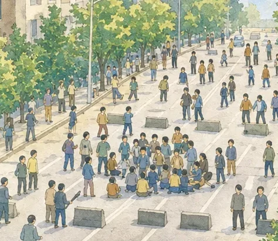
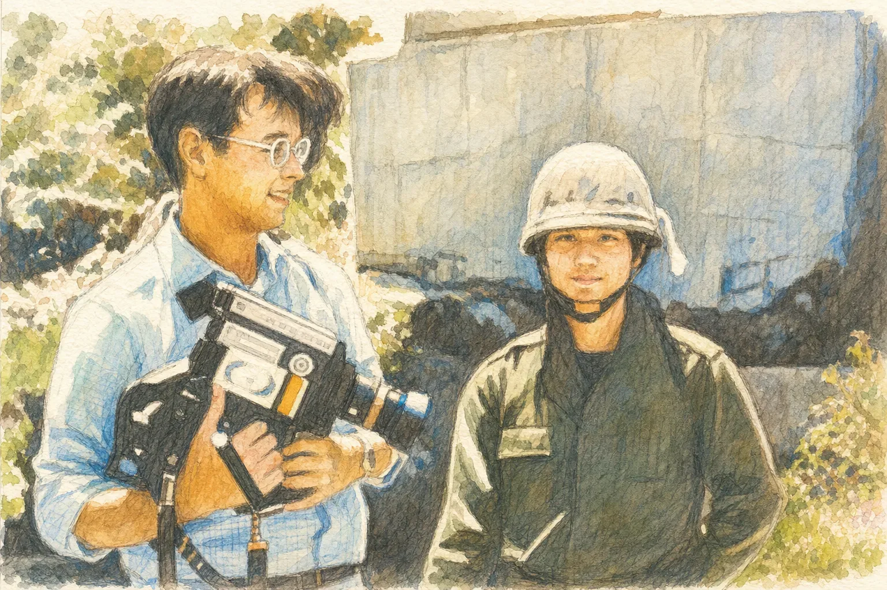
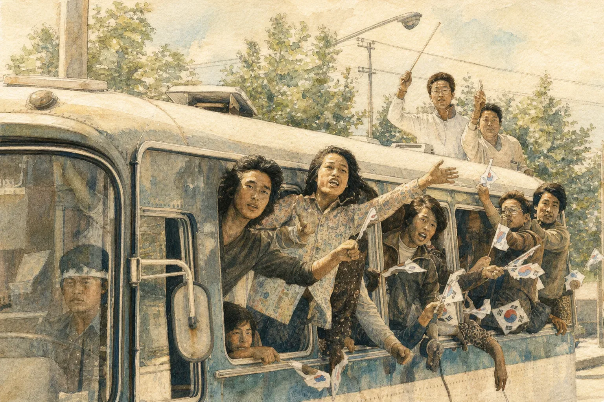

기록을 따라 오월 광주를 탐험해요 · 초등 5~6학년 5·18민주화운동 탐구 웹앱
학생이 기록연구원이 되어 5·18민주화운동 자료를 읽고 듣고, 4개 미션을 풀며 나의 기록장과 기억 엽서를 완성하는 웹앱입니다. 선생님은 학급방을 만들어 학생들의 진행과 답을 수업 중에 바로 확인합니다.
| 대상 | 초등 5~6학년 · 사회, 도덕, 창의적 체험활동(5·18 계기 교육) |
|---|---|
| 시간 | 앱 활동 25~30분 (도입·나눔 포함 40분 1차시) |
| 환경 | 태블릿·크롬북·PC·휴대폰의 인터넷 브라우저 (설치 필요 없음) |
https://app-84b43.web.apphttps://app-84b43.web.app/#teacher자료 카드는 그림·글·나레이션으로 함께 나와요. 문제를 틀리면 자료를 다시 읽고 다시 도전해요.



마지막에는 오월 정신(민주주의·저항·인권·공동체·참여)을 골라 기억 엽서를 만들고 이미지로 저장해요.
🎧 이어폰을 끼면 나레이션을 들으며 탐험할 수 있어요. 기기를 친구와 같이 쓰면 끝난 뒤 다음 친구를 위해 나가기를 눌러 주세요.
| 탭 | 볼 수 있는 내용 |
|---|---|
| 진행 현황 | 학생별 스탬프, 지금 위치, 활동 중 표시 · 자세히로 한 학생의 결과 보기 |
| 문항 분석 | 문제별 한 번에 맞힌 비율, 평균 다시 도전 횟수 — 어려워한 문제를 함께 다시 봐요 |
| 학생 글 | 생각 쓰기 답과 기억 엽서 — 나눔 시간에 소개해요 |
| 단계 | 활동 | 시간 |
|---|---|---|
| 도입 | 이팝꽃·주먹밥 이야기로 궁금증 열기, QR로 입장 | 5분 |
| 전개 | 미션 1·2 → 문항 분석으로 함께 점검 → 미션 3·4 | 27분 |
| 정리 | 기억 엽서 만들기, 우리 반 실천 약속 나누기 | 8분 |
자세한 과정은 수업지도안, 활동 정리는 학습지를 참고하세요. 시간이 모자라면 미션 4와 엽서는 다음 시간에 이어서 탐험하기로 이어 할 수 있어요.
🎨 앱의 그림과 나레이션 일부는 생성형 AI로 제작했으며, 사건 그림에는 실제 사건을 바탕으로 생성형 AI로 제작한 이미지임을 표시했습니다.